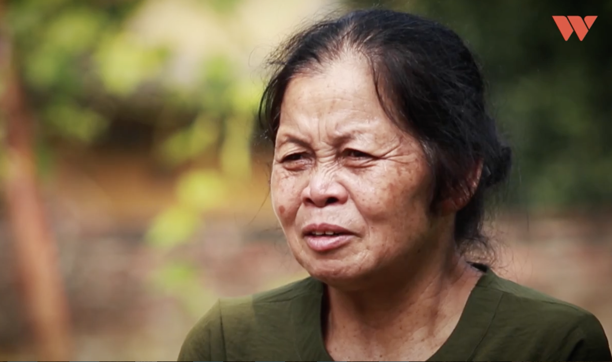

Hoàng Huyền Thương, 14 tuổi, vừa chập chững bước vào cấp 3. Thương không có mẹ. 17 tháng tuổi, Thương bị bỏ rơi. Khi ấy, người phụ nữ 49 tuổi, từ người trông trẻ bất đắc dĩ trở thành mẹ em. Chỉ như một bóng hình xa lạ, bà bước vào đời Thương và cho em một cuộc đời mới.
Hoàng Huyền Thương, 14 tuổi, vừa chập chững bước vào cấp 3. Thương không có mẹ. 17 tháng tuổi, Thương bị bỏ rơi. Khi ấy, người phụ nữ 49 tuổi, từ người trông trẻ bất đắc dĩ trở thành mẹ em. Chỉ như một bóng hình xa lạ, bà bước vào đời Thương và cho em một cuộc đời mới.
"Nó (mẹ ruột Thương) nói với tôi là bị ốm, phải đi bệnh viện. Tôi cũng "ừ". Lúc đấy tôi cũng không nghĩ là nó bỏ con ngay, tôi chỉ đoán già đoán non. Hay là nó đi làm, hay nó bị làm sao, nhiều cái "hay" trong đầu tôi lắm. Nhưng không bao tôi nghĩ đến, "hay là nó bỏ con"" - bà Bình nhớ lại. Hoàng Huyền Thương, 14 tuổi, vừa chập chững bước vào cấp 3. Thương không có mẹ. 17 tháng tuổi, Thương bị bỏ rơi. Khi ấy, người phụ nữ 49 tuổi, từ người trông trẻ bất đắc dĩ trở thành mẹ em. Chỉ như một bóng hình xa lạ, bà bước vào đời Thương và cho em một cuộc đời mới.